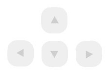

|
StarWorms Email: diogo.autilio@gmail.com Changelog: 0.0.1-alpha (16/10/2006) · Release inicial 0.1.3-alpha (29/11/2006) · Troca de toda a estrutura Canvas para Swing. · Retirado o uso de IOHelper. · Retirado o SimpleWriter e SimpleReader · Adicionado a opção de Salvar o jogo em qualquer momento, para posterior carregamento do jogo salvo. · Adicionado eventos de teclado para controlar os personagens. · Adicionado Botão “Quit”, para sair do jogo. · Melhorias em toda GUI. 0.1.7-alpha (28/12/2006) · Adicionado a ação de “Pulo” para os players. · Adicionado o uso de SVN para controle do projeto. · Removidos a maioria das Heranças das Classes. 0.1.7.1-alpha (20/01/2007) · Adicionado o logo ao Changelog.
Features: · Melhora no algoritmo para repintar a tela. · Implementação de Background. · Implementação de Sons. · Implementação de Vento. · Troca da Física implementada pela ODEJava. · Melhoras na GUI. · Acertar o Level Editor. ( bruno gola ) Requisitos: O JDK 1.5 é necessário para compilar o jogo se necessário. Se desejar baixar: http://java.sun.com/ Instruções: Controles : O Usuário só poderá jogar utilizando o teclado, com as teclas “Left” e “Rigth” o player irá se mover, com a tecla “Up” e “Down” ele controlará o angulo. Com a barra de espaço irá se medir a força que o usuário desejar e com a tecla “Control” fará o player pular. |
|
|